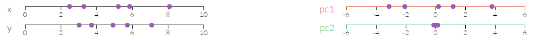

From the previous section we now have 21,945 ratios as our features. One of the issues with a large number of features is the
curse of dimensionality. In order to reduce the number of dimensions we can use
Principle Component Analysis (PCA).
PCA involves an orthogonal transformation of your dimensions to emphasize variance. The goal of PCA
is to reduce the number of dimensions used for modelling to a suitable number that covers the majority of the variance in the data.
This is easily understood with some excellent visuals from this site.
In the below 2d example we have 5 data points and 2 features (x & y). Each datapoint has both an x value and a y value which we would use in our models.
Using PCA we can create a transform the axis into pc1 and pc2.
We haven't changed anything about the data. Both pc1 and pc2 axis are a linear combination of x & y. But as you can see from the below pc1 now gives as a lot of of information about the points
whilst pc2 gives very little and can be ignored. We have therefore reduced our dimensions from 2 to 1 and can use only pc1 in our model.

Below is a similar example using 3 dimensions.
Using PCA we can reduce our 21,945 features
to 150 which gives us 99.98% of the variance - and from the graph you can see that using as few as 50 features will give you over 98% of the variance.